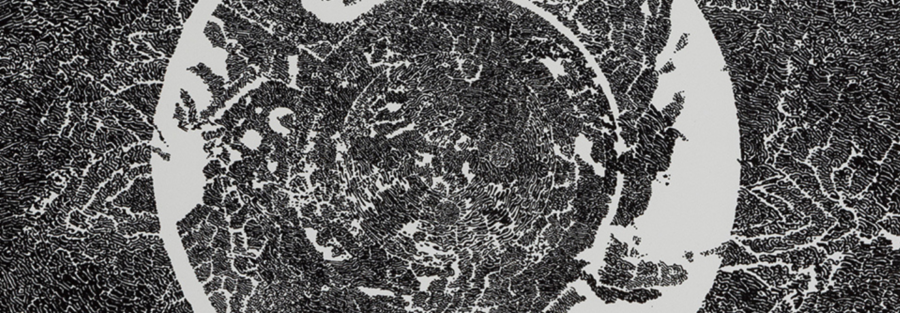

A Close Look: The Art of Bruce Conner
Artist Bruce Conner (1933-2008) was a relentless innovator who experimented across genres, techniques, and mediums, including collage, filmmaking, performance, and photography. Throughout his career, he often played the role of provocateur and at times rejected the label of “artist,” challenging conventions and playfully questioning the nature of materials and artistic practice.
The Block Museum will exhibit 5 of Conner’s lithographs from Monday, January 5th-Sunday, February 1st in the Living Room.
Join Corinne Granof, Academic Curator, and Michael Metzger, Pick-Laudati Academic Curator for Cinema and Media Arts, for a discussion about the boundary-pushing printmaking and experimental films of this postwar American artist and to consider Conner’s visual art and moving image practices together. Coffee and tea will be offered beginning at 3:00 pm.
The Living Room is a drop-in space at The Block Museum that invites students and other visitors to gather, reflect, and connect with one artwork in the museum’s collection, rotating each month. Stop by for a warm drink and a conversation — most Wednesdays and this Thursday from 3–5 PM, the coffee and tea is on us.
Participation level – medium, participants are encouraged to share thoughts and questions during the program.
Programs are open to all, on a first-come first-served basis. RSVPs are appreciated, but not required.
ABOUT THE SPEAKERS
Corinne Granof is Academic Curator at the Block Museum of Art, Northwestern University where she directs curatorial initiatives with students and faculty. She has collaborated on over 30 past exhibitions and publications for the Block, including Pouring, Spilling, Bleeding: Helen Frankenthaler and Artists’ Experiments on Paper (2025); Dissident Sisters: Bev Grant and Feminist Activism (2024); For One and All: Prints from the Block’s Collection (2023); Up Is Down: Mid-Century Experiments in Advertising and Film at the Goldsholl Studio (2018); and William Blake and the Age of Aquarius (2017).